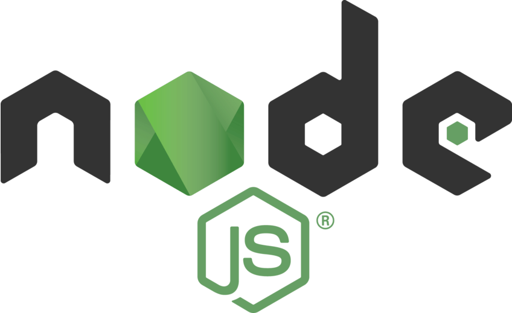
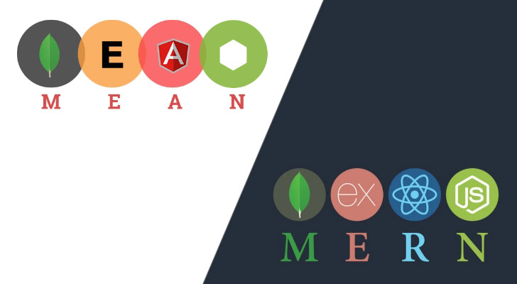

Дополнение про JavaScript
Прийдя со страницы "Используемые языки программирования" вы, возможно, заметили, что почти все сферы могут использовать JavaScript. Что же это за магический язык, который умеет делать всё?
Дело в том, что для JavaScript существует программная платформа Node.js, преврящающая JS из узкоспециализированного языка в язык общего назначения.
Как сказано на сайте проекта, Node.js – это среда выполнения JS, основанная на движке V8 из Chrome. Его главной особенностью является возможность выполнения команд не только в браузере, но и на сервере.
Появилась платформа в 2009, когда Райан Дал придумал новый подход к выполнению кода на сервере. Суть в том, что можно было создать систему с ориентацей на события.

Node.js используется в первую очередь для создания "Web-приложений" на всем цикле разработки.
Node.js используют такие гиганты, как Google, Uber, Netflix Walmart, Microsoft (Azure), LinkedIn, Yahoo, Yammer, Nike.
Node.js использует менеджер "пакетов" npm (Node Package Manager), для которого пользователи со всего мира создают собственные библиотеки. Сейчас, к слову, их насчитывается более 1.3 млн
Среди пакетов npm есть:
- визуальные (React, Vue, Angular, Zone)
- инструменты для создания анимаций (gulp)
- серверные (request, Express, Semver, node-fetch)
- упрощающие работу с БД (GraphQL, MongoDB, Mongoose)
- препроцессоры (Sass, SCSS, PostCSS, Less)
- инструменты для обновления страницы с изменением данных (Socket.io, Events)
- валидаторы JS (joi, Meow)
- мета библиотеки (CORS, Extend, core-js, dotenv)
- инструменты для "терминала" (ora, Nodemon, ShellJS, JS-YAML)
- ~шуточные библиотеки (yosay)
- дополнения к другим библиотекам (@babel/core, @angular/runtime, React-Redux)
- инструменты для создания графических интерфейсов вне браузера (Electron)
- ...и даже языки программирования (TypeScript, CoffeeScript)
Среди разработчиков, использующих Node.js в своей работе популярны ME?N стаки, MERN, MEAN, MEVN – MongoDB, Express,
<React, Angular или Vue, соответственно>
, Node.js.
Такой комплект позволяет создать полноценное Fullstack приложение, использующее базу данных от MongoDB, серверный код от Express и визуал от "третьей буквы".
